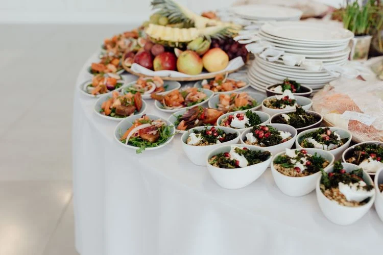
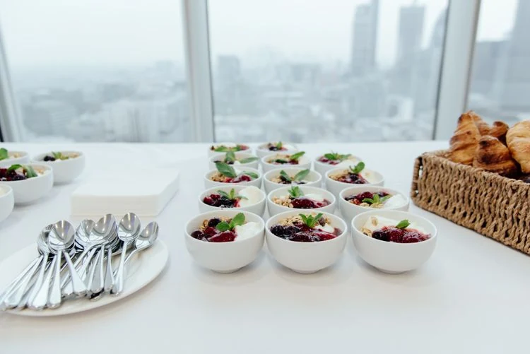
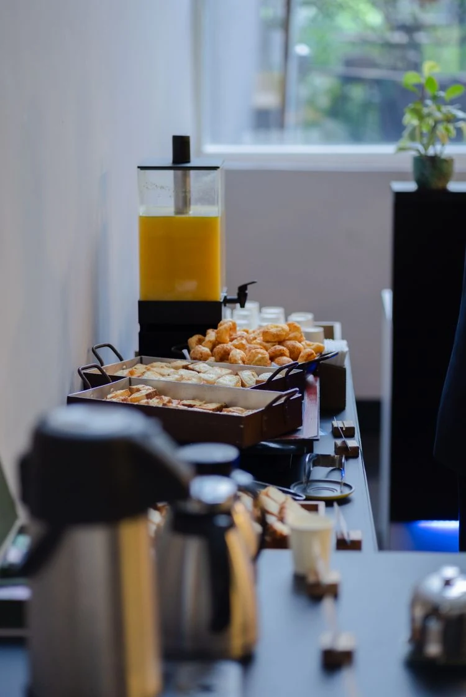
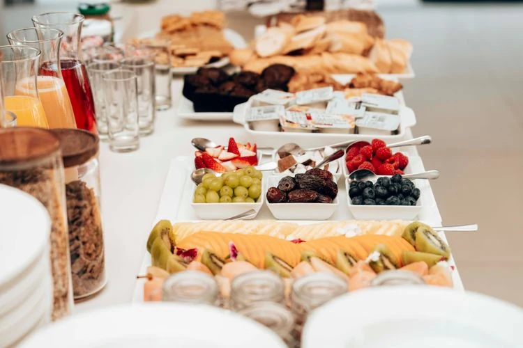
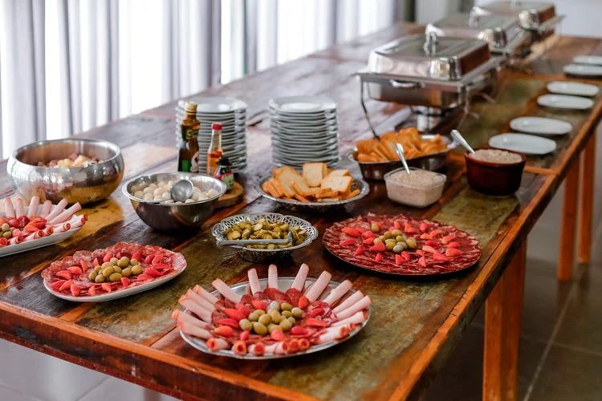
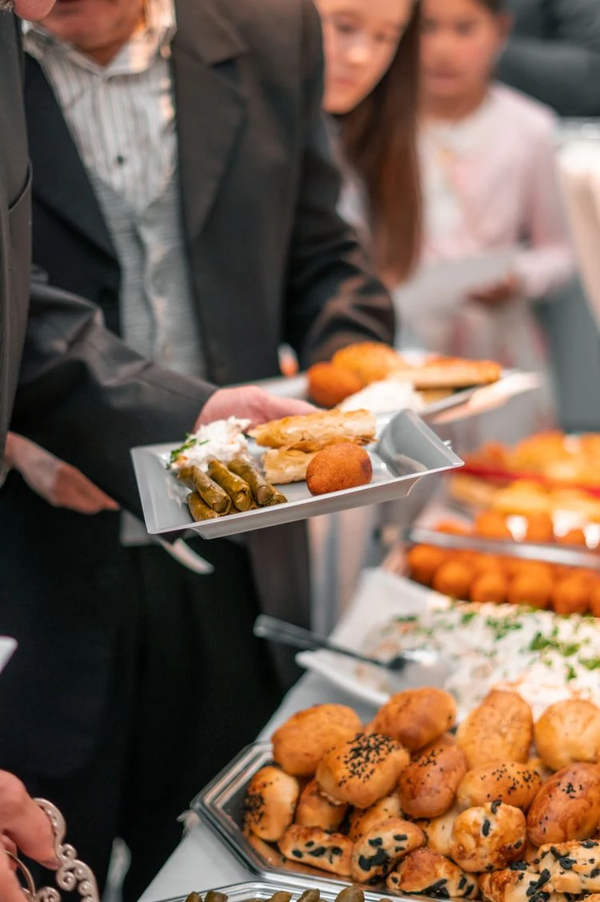

OPTION 1 · PEXELS #7245480
A polished lunch spread
My strongest lunch option: individual salads, fruit, and neatly arranged plates keep the food front and center.
Photo: Olga Lioncat
View original & download →Six food-first alternatives for meeting catering, emphasizing presentation, breakfast service, and catered lunches. People are secondary or out of frame. These are stock settings, not Southern Crescent events. Your current website photo has not been replaced.
My recommendations: Option 1 for lunch catering, or Option 2 for a meeting breakfast. Tell me which option number you prefer.
← Back to the website · View the original photo shortlist
My strongest lunch option: individual salads, fruit, and neatly arranged plates keep the food front and center.
Photo: Olga Lioncat
View original & download →
My strongest breakfast option: yogurt bowls, pastries, and coordinated serving pieces in a light contemporary setting.
Photo: Olga Lioncat
View original & download →
A compact professional spread with pastries and juice. Complements your current coffee-service hero image.
Photo: Wolf Art
View original & download →
Fruit, cereals, pastries, and juices communicate a complete morning offering.
Photo: Keegan Checks
View original & download →
Shared platters and warm-service equipment make the catering format clear. More traditional than the other choices.
Photo: Vidal Balielo Jr.
View original & download →
The food is prominent while business attire provides context. Best if you still want a small human element.
Photo: Hasan Gulec
View original & download →